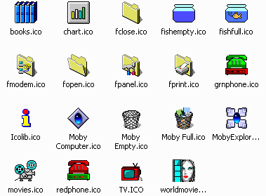

Managing an Active Collection
Top
It is very important to keep your icons and/or icon libraries in one place on your
hard drive. Once you assign an icon to a program or shortcut, it remembers where
that icon is located on your hard drive. If you move your icons around, the
program or shortcut won't be able to find the icon. It doesn't hurt your computer
but your icons won't show up correctly. It is a good idea to store your icons
in its own folder, such as
c:\icons.
- Always keep the Icon Library ICL files in theor original folder
if you use them as the source of icons elsewhere in your system.
- A better solution is to extract
the individual icons you need from
the ICL files and store the resulting ICO files in their
own directory such as c:\icons. These icons can then be your
source material for all icons changes throughout your system, and moving
the original ICL files is no longer a problem. Here is an example
of the contents of a typical c:\icons folder.

- You can derive your own icons using
Icon Library icons as the source material.